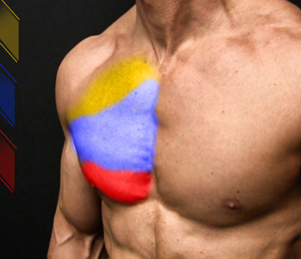
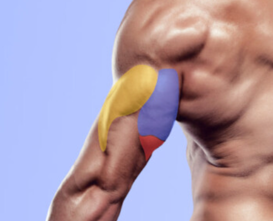
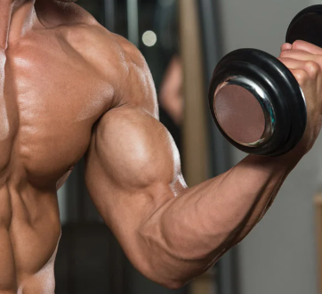
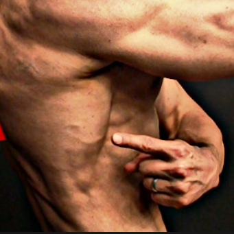
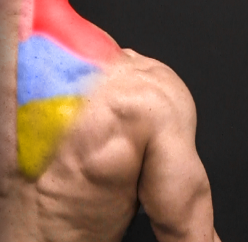
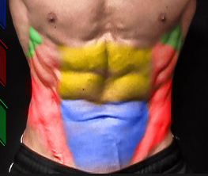
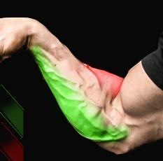
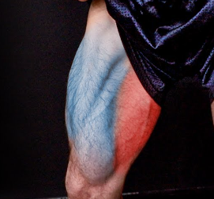
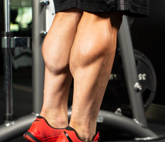

Muscles

Chest
The chest muscles are made up of the pectoralis major and, underneath that, the pectoralis minor. 1 Together they are often referred to as the "pecs." The pectoralis major is the larger muscle and has two parts—an upper portion (called the clavicular head) and the lower portion (called the sternal head).

Triceps
The triceps brachii is a large, thick muscle on the dorsal part of the upper arm. It often appears in the shape of a horseshoe on the posterior aspect of the arm. The primary function of the triceps is the extension of the elbow joint.

Biceps
The biceps brachii is a large, thick muscle on the ventral portion of the upper arm. The muscle is composed of a short head (caput breve) and a long head (caput longum).

Lats
The latissimus dorsi muscle is a broad, flat muscle that occupies the majority of the lower posterior thorax. The muscle's primary function is in the upper extremity but is also considered to be a respiratory accessory muscle.

Traps
The trapezius muscle is a large superficial back muscle that resembles a trapezoid. It extends from the external protuberance of the occipital bone to the lower thoracic vertebrae and laterally to the spine of the scapula. The trapezius has upper, middle, and lower groups of fibers.
Shoulders
The four rotator cuff muscles include the supraspinatus, infraspinatus, teres minor, and subscapularis. [2][1] Other muscles that form the shoulder girdle include the pectoralis major, pectoralis minor, the deltoids, trapezius, and the serratus anterior.

Core
The core muscles are the muscles deep within the abdominals and back, attaching to the spine or pelvis. Some of these muscles include the transversus abdominis, the muscles of the pelvic floor, and the oblique muscles.

Forearms
Muscles and Fascia of the forearm, Biceps Brachii, Brachioradialis, Pronator Teres, Flexor Carpi radialis, Palmaris longus, Flexor carpi ulnaris, Flexor digitorum sublimis,.

Legs
The thighs contain several muscles. The quadriceps and hamstrings help us bend and extend the hips and knees. The adductors move the legs inward toward each other. The pectineus and sartorius let you flex and rotate the thighs at the hip joints.
